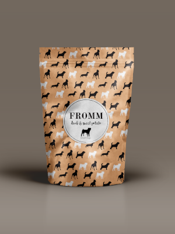

Fromm Dog Food Package Design

For this project I rebranded a current dog food company - Fromm's. This is a trusted family owned company that prides itself on quality. I wanted to mix the rustic family-owned feeling with high value so I created a series of packaging that is made of recyclable kraft paper which looks rustic, with silhouettes and type that are classic black and white to portray the great quality food inside. I have designed a template for a large box of dog food with handles as well as a smaller bag. This packaging could easily be carried over for all of their flavours.